|
SV Babberich - Roda JC (1-3) 9 augustus 2003 |
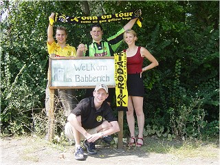
Via Duitsland bereikten we het vriendelijke
dorpje Babberich.
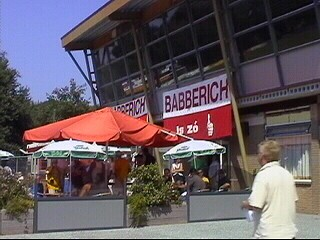
Het vrij professionele hoofdgebouw van Babs
met mooie bar en complete fritestent.
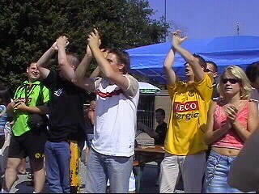
Luide toejuichingen van de Rodasupporters.
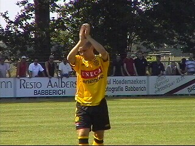
Er werd geroepen om Soetaers die nog net geen
akkoord heeft bereikt met Ajax. Tom heeft het
moeilijk met de situatie.
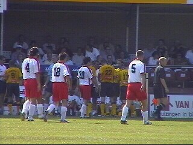
Nederland beleeft de zoveelste tropische dag
waardoor er wederom twee drinkpauzes worden
ingelast.
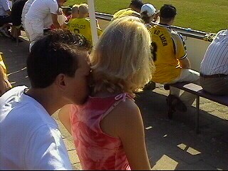
Joris drinkt uit de nek van zijn geliefde.
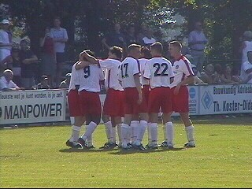
Na een lusteloze eerste helft zorgt Babberich
voor opwinding. Al na 3 min. scoort Ibrahim.
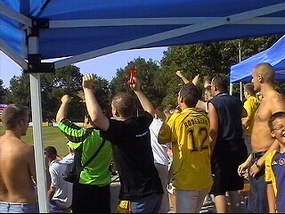
De Rodafans moedigen hun team extra aan.
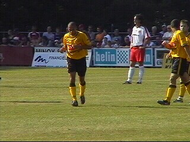
Het helpt want in de 52e min. scoort Cristiano de
gelijkmaker en in de 60e min. maakt Sergio er
1-2 van.
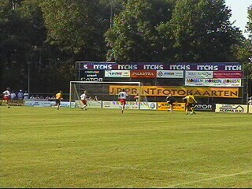
Invaller Ivan Vicelich scoort in de 91e min. de
verlossende 1-3.
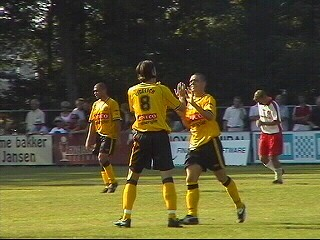
Veni Vedi Vicelich!
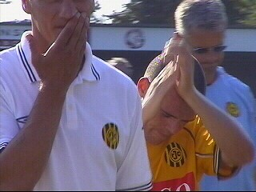
Een zeer zwaarmoedige Soetaers. Een triest
moment voor de Rodasupporters maar meer
nog voor Tom zelf....
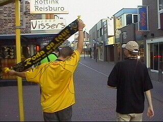
Na een lang verblijf in de gezellige kantine van
SV Babberich, bieren we af in Boxmeer.
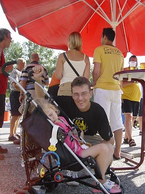
Deze Rodasupporter woont in
's-Heerenberg.
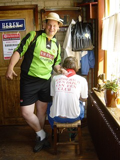
Deze Rodasupporter woont op de
Heelderbaan ;-)
© Koempels
Pleasure Dome